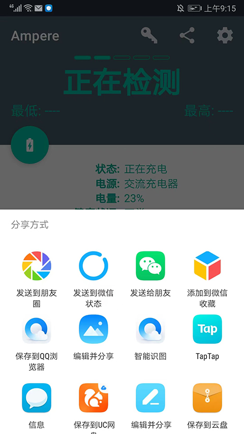

Ampere 新手入门：看懂手机充电那点事，一个 App 就够了
你是不是好奇过"为什么充得这么慢"、"这根线到底行不行"？Ampere 就是帮你把这些疑问变成数字的利器。本文带你从零开始，五分钟跑通，看懂手机充电背后的小秘密。
这篇能带你从完全不懂到用起来——不需要任何技术基础，跟着做就行。
它到底是干嘛的？一个生活化类比
想象你家里装了一个智能电表，能实时告诉你现在正在用多少电、哪些电器在偷跑。Ampere官网上说得很清楚，它就是装在你 Android 手机里的那个电表——只不过测的不是家里的交流电，而是手机电池的充电和放电电流，单位是毫安（mA）。
简单说，Ampere 能回答这些你可能憋了很久的问题：
- 我插了 65W 快充头，手机到底吃进去多少电？
- 边充边玩的时候，电量是涨了还是在掉？
- 换了一根新数据线，会不会真的充得更快？
- 晚上睡觉待机一晚上，到底耗了多少电？
这些问题以前全靠"感觉"——Ampere 把它们变成一行实实在在的数字，让你一眼看明白。

五分钟上手：从下载到第一次跑通
跟着下面四步走，五分钟内你就能看到第一组电流数据：
第一步：下载安装。 打开手机的应用商店，搜索 Ampere。找到之后点安装就行。如果应用商店搜不到，可以去官方下载拿安装包。软件本身是免费的，有一些高级功能需要付费解锁，但新手阶段完全够用。
第二步：打开应用，等一等。 第一次打开 Ampere，它会花 10 到 15 秒去连接手机内部的电流传感器——别着急，耐心等那个"正在检测"的转圈消失。正常情况下，几秒后你就能看到主界面跳出一串数字，比如 +2340 mA 这样的读数。
第三步：插上充电器，看数字变化。 现在把你的充电器插上手机。注意看主界面的数字——如果是正数（比如 +2000 mA），说明电池正在充电；如果是负数（比如 -500 mA），说明电池在放电。数字越大，说明充电或放电的速率越快。
第四步：拔充电器，看放电。 把充电器拔掉，数字会立刻变成负数，这个就是你的手机当前的耗电速度。亮着屏、玩着游戏时这个数字会大很多，锁屏待机时会很小。
到这里就完成了——你已经成功用上了 Ampere。是不是比想象中简单？
上手后先玩这三个功能
跑通之后别急着卸，Ampere 有三个新手最值得先碰的功能，每一个都会让你"哦原来如此"。
功能一：看懂充电的三个阶段
你有没有发现，刚插充电器时电流很高，充到后面电流会突然掉下来？这不是充电器坏了，是电池在保护自己。
锂电池充电天然分三个阶段：
- 预充阶段（0%~10%）：电量极低时，电池内部电压不稳定，充电管理芯片会用小电流慢慢"预热"一下，等电压回到安全区间再提速。这个阶段 Ampere 读数会偏低，属于正常现象。
- 恒流阶段（10%~70%）：这是充电电流最大、最稳定的黄金区间。充电器会一直维持一个固定的大电流往里灌——你看到的 Ampere 读数就是充电器能力、手机快充协议、线材品质三者共同决定的真实表现。
- 恒压阶段（70%~100%）：接近满电时，电池电压已经接近上限（一般 4.2V），再大电流会伤电池。芯片会逐步降低电流，同时保持电压不变，直到电流降到很小才真正充满。
你可以自己做个小实验：用 Ampere 盯着从 10% 充到满电的过程，你会亲眼看到电流曲线先平后降——这就是电池在自我保护。以后看到电流"掉下来"就不会慌了。
功能二：对比不同充电器和线材
这是 Ampere 最实用的玩法之一。你是不是家里堆了好几个充电器、好几根数据线，不知道哪个好用？Ampere 帮你分高下。
操作很简单：
- 把手机电量控制在 20% 到 60% 之间（这个区间刚好在恒流阶段，电流最稳定）。
- 清掉所有后台 App，关掉屏幕——让手机自身功耗尽量降到最低。
- 插上第一个充电器和线材，等 Ampere 读数稳定后记下来。
- 拔下来，换第二个，同样条件再记一次。
两次读数的差异就是真实的能力差距——谁真快谁真慢，数字不会撒谎。注意一定要固定在同样的电量区间和屏幕状态下比，否则结果不准。具体的对比测试条件和注意事项，Ampere文档里讲得更细，对照着一步步来就不会跑偏。

功能三：发现后台"偷电"的 App
有没有过这种感觉：明明什么都没干，电量还是哗哗往下掉？Ampere 能帮你抓出"偷电贼"。
操作方法：
- 拔掉充电器，Ampere 会显示当前的放电电流（负数）。
- 记下这个基线值（比如锁屏待机时大概是
-80 mA）。 - 然后一个一个打开你常用的 App，每开一个就看看放电电流有没有明显变化。
如果你发现某 App 一开，放电电流从 -80 mA 跳到了 -400 mA，那就是它在后台吃电厉害——可以考虑关掉它的后台刷新权限，或者干脆不用的时候把它杀了。
小白的三个常见疑问
疑问一：为什么 Ampere 显示一直是 0 mA？
这是 Ampere 用户最常碰到的问题，原因分两种。
第一种是硬件缺失——你的手机内部的电源管理芯片（简单说就是负责管电池的那块小芯片）根本没有电流传感器，或者厂商在固件里把它藏起来不给 App 用。这种情况在一些入门级 Android 手机上比较常见，属于硬件层面的限制，Ampere 再怎么调设置也没用。你可以查一下 Ampere 官方列出的硬件缺失机型列表对照一下。
如果按顺序试了这些操作还是 0 mA：打开 Ampere 等 10~15 秒 → 开启"旧测量方法" → 逐个切换"测量接口" → 重启手机 → 清除 Ampere 数据重装，那么大概率就是硬件问题了。
第二种是固件更新之后出问题——系统 OTA 更新可能改掉了 Ampere 读取数据的路径或权限。这种情况好办：进手机设置 → 应用管理 → 找到 Ampere → 清除数据（注意不是"清除缓存"，是"清除数据"）→ 强制停止 → 重新打开。清完数据 Ampere 会回到默认配置，重新连接新固件下的传感器，通常就能恢复正常。
疑问二：边充边玩为什么电量反而掉了？
你可能遇到过：插着充电器，亮屏玩着游戏，结果电量不但没涨还在往下掉。这不是手机坏了，是充电和放电在赛跑，放电赢了。
充电器输出的功率一分为二：一部分给手机自身运行用（屏幕、CPU、GPU 都要耗电），剩下的才进入电池。玩 3D 游戏时，手机自身功耗可能占到充电器总输出的七八成甚至更多，电池只能分到一点点。如果你的手机功耗大到超过了充电器的输出能力，电池反而要被迫边充边放——这种状态对电池非常不友好，尽量不要边充边玩。
疑问三：Ampere 读数是真实的吗？准不准？
Ampere 读的是手机内部电流传感器暴露出来的数据，数据本身由手机硬件产生，Ampere 只是"看一眼"然后显示出来。所以读数的准确性取决于你手机里的传感器好不好——旗舰机的传感器通常精度更高，入门机可能误差大一些。
如果你需要绝对精准的测量（比如评测充电器），可以考虑买一个 USB 功耗测试仪，插在充电器和手机之间，直接用硬件测——这种不受任何软件或固件的限制，结果最靠谱。日常使用看个大概，Ampere 完全够用。
收尾：想深入玩的话
Ampere 还有 Pro 版，解锁之后可以设置电流异常警报（比如充电电流突然掉了就提醒你线材可能接触不良）、看放电历史曲线、用深色主题之类。但就算只用免费版，把上面说的三个功能玩熟，你已经比大多数人更懂自己手机的充电状态了。
最后说一句：别把 Ampere 当成什么专业仪器，它就是帮你看懂手机充电的一个窗口工具，用来发现点小问题、做个对比就很好。能用、好用、别太折腾，这才是正确姿势。
这套关于手机充电电流的资料，我分别同步到了三个代码仓库——GitHub 是主仓库，Gitee 和 GitCode 是国内镜像备份，方便大家根据自己的网络环境选择查看和备份。